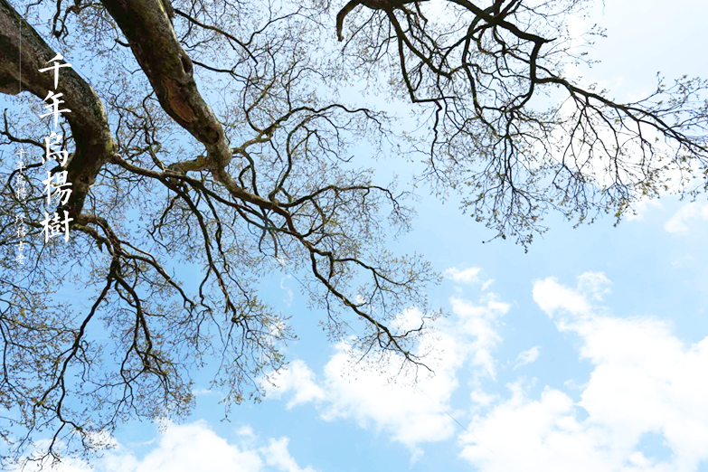

It is rare for a thousand years. The wuyang tree of zhoujia village, rare and ancient, tall and straight, bear witness to the wind and rain course of wujiang, and become a landscape of wujiang gallery. The tree is a rare tree species, with only six in the county. The zhoujia zhai Yang tree, compared to guizhou along the river "millennium wuyang", the tall ancient, has a long history, is the "wujiang first uyang tree". Historically, the wujiang river valley has a number of uyang trees, which are rare and rare. Weeks home village is located in the right bank of wujiang river, belongs to a group compassion rural village of paddy field, in the southernmost tip, peng and unitary Yang county ditch critical insulation, and facing the river county in guizhou province. There are "two provinces (three counties)". There were four tall poplar trees in the village, and after the pengshui hydropower station was filled, only two survived.
